Backpacking with Rosie the Dog 4/18/2024
San Rafael Swell, UT
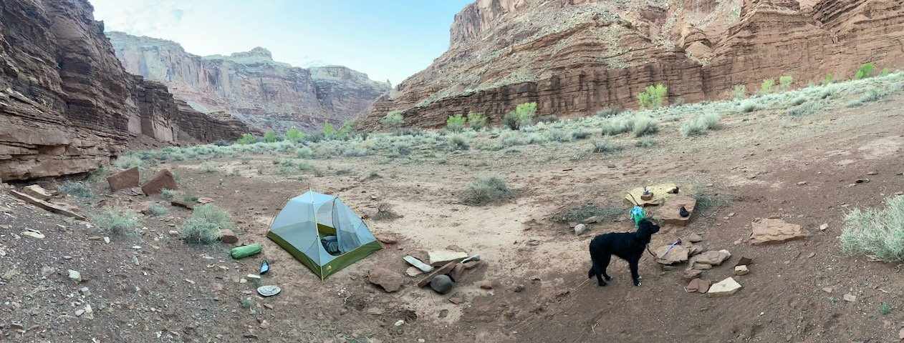
Loaded up the 4Runner and headed out to Utah for a quick backpacking trip with my dog.
I had planned a big loop route to a spring, but I forgot my compass, and I could feel how confusing the slot canyons could get, and it got a little spooky
So my dog and I just did an easy out-and-back
Camping with my mom 5/28/2024
Goosenecks State Park, UT
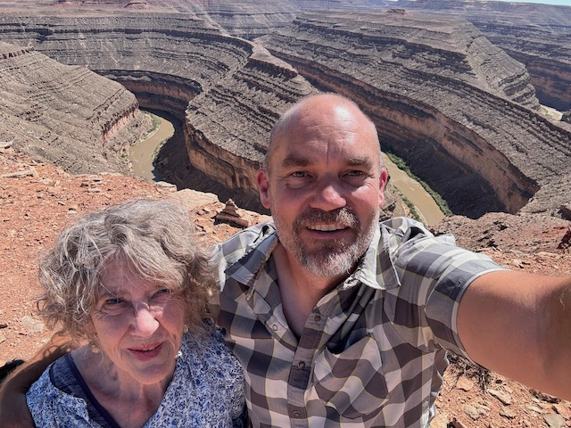
Drove the VW Westy to Albuquerque, picked up my mom, and headed toward Moab for Syncro Solstice!
The night before we left Albuquerque, I saw a message on TheSamba that a couple with a Vanagon with a Subaru engine swap was stranded in Kayenta, AZ. My mom and I stopped to help on our way. I got their van going. It turned out the problem was just a deceptively blown fuse! The couple was on vacation from Canada and really nice. It turns out they own Costal Campfires. I think we saved their vacation.
My mom and I stopped at Monument Valley and continued on to Goosenecks State Park. I had never been there, and it was spectacular. I'd definitely return!
Syncro Solstice 6/1/2024
Island In The Sky, outside of Moab, UT
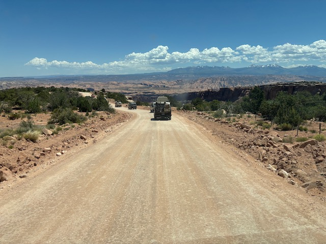
I love going to The Syncro Solstice every year. It's an event at a spectacular group campground outside of Moab for Volkswagen vans. Every year 75 or 100 vans show up.
By day, everyone breaks into smaller caravans that tackle offroad trails together. Two wheel drive vans like mine are welcome, and it's amazing to see what they can do. It's especially amazing when everyone is accompanied by a team of vans to help recover someone if they get into trouble. The ugliest four wheel drive vans tackle the gnarliest trails outside of Moab and surprise the guys in modified Jeeps. Even folks whose vans are too beautiful to beat up or whose vans have been damaged on the trail can have fun because most people welcome passengers. I always manage to meet new people this way, piling into the same van to drive an insane offroad track, to go hike a trail, or to swim at a swimming hole.
At camp, people let their friendly dogs run around in happy packs, and of course Rosie The Dog joined them. The people gather around in groups to swap stories, play games, and geek out about the technical minutiae that comes with driving heavily modified obsolete vans on epic adventures. Everyone is eager to and show off van projects they completed over the last year and trail damage they sustained over the weekend. Everyone takes turns preparing large breakfasts and dinners for everyone else. At night, a handful of campfires spring up throughout the camp and people with different vibes gather around each. Some campfire rings involve drinking heavily. I always make interesting new friends. The stars are unreal. It is definitely one of the most beautiful places I have ever been.
This year, my wife Liza was still working, I had just quit my job, and my mom had just retired. When I asked my mom if she wanted to go with me, I was surprised she said yes! It was so much fun to share this experience with my mom. Everyone at the event loved her. She is so thoughtful and charismatic and full of great stories. She told me it was the first time she realized that Utah was beautiful and was the first time she enjoyed camping. I'm so thankful that I had long, uninterrupted stretches of time to just be with my awesome mom. I don't think I would have had the time and mental space to be with her properly if I was thinking about hurrying back to a job.
A lot of people at Syncro Solstice mentioned how great it was that I could spend this time with my mom because I wouldn't have this opportunity forever. Then they'd go into stories about what their mothers were like while they were still alive. They were right, and again I thought about the "Die With Zero" book talking about how once you leave one pool in the "waterfall of life" you cannot go back.
Swimming in Cenotes 6/26/2024
Villadolid, Mexico
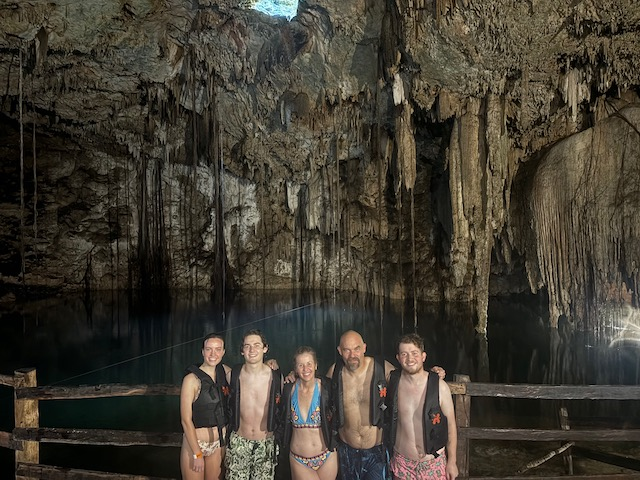
After Syncro Solstice, Liza finished up the school year and immedately headed to Costa Rica for a 3-week yoga retreat to become a certified yoga instructor. I stayed home to take care of the dogs, be in the USA to help out Samuel if Clementine Band ran into any problems on their Chicago tour, and do some house projects. Completing some house projects were part of "the deal" Liza and I made to take a year off
Samuel didn't need any rescuing on his tour. I refinished my house's deck, remodeled a bathroom, picked weeds, and moved a lot of gravel in my yard. It was weird without Liza and I felt kind of stuck at home. I was actually seriously thinking of flying to Costa Rica, renting a motorcycle, and riding down to meet her, but I'm glad I didn't. I think it was really powerful for Liza to get into her own headspace and body and connect with a bunch of other young and fun yoga girls without me interfering with her vibes. However, by the end of June I was ready to get out and have adventures and see my girl!
Alex, Samuel, Samuel's girlfriend Miranda, and I flew down to Cancun. Liza took a puddle jumper plane from her yoga retreat to San Jose, Costa Rica; took an airliner from San Jose to Panama City; and took another airliner from Pana City to Cancun. We met up at a fun (but kinda sketchy) AirBnB near el Centro in Cancun, rented a car, and headed out on adventures!
I wanted to see some sights, speak my crummy Spanish to strangers, and generally have adventures. Liza's life had been full of adventure in Costa Rica, so she just wanted an easy time on the beach. So we each planned half the trip: I booked a spectacular AirBnB in the colonial town of Villadolid, and Liza booked a nice hotel on the car-free beach resort island of Holbox. We expected my portion to be challenging and Liza's portion to be relaxing. It turned out to be just the opposite.
Driving in Mexico was easy and fun. We drove from Cancun to a cenote outside of Villadolid and had a great time going down stairs to swim in the illuminated cool water inside the caves. Tree roots reached down from the ceiling and there were little fish in the water. Our place in Villadolid was a spectacular converted original building from the 1600s built around a central courtyard that had a beautiful little swimming pool. We were just a few blocks from the plaza mejor, so we could walk down to a lot of nice restaurants and hang out at the plaza. We went to Chichén Itzá on Samuel's 20th birthday and Alex was especially captivated reading all the plaques and signs. On the way back we stopped by a little roadside restaurant where a lady made tortillas for us over a fire. I asked for a Dos Equis beer for Samuel (b/c it was his 20th birthday, which is XX in Roman numerals). The lady who owned the restaurant brought out a Dos Equis beer and a tres leches cake for him and all her family who worked there came out and sang to him. I insisted that they all share the cake with us and she hugged Samuel. It made Liza cry.
This whole phase of the Mexico trip was suprprisingly easy. Everyone got along and had fun. I love that Liza is always so adventuresome.
Beach 6/30/2024
Isla Holbox, Mexico
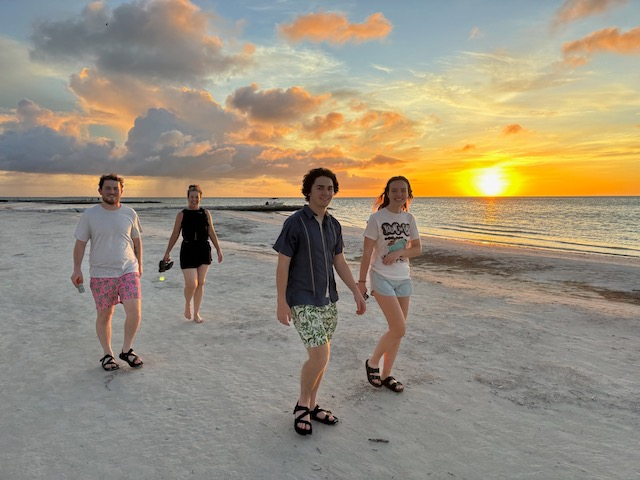
After Villadolid, we moved on to the "easy" beach phase of our trip. Holbox is a little sandy island with no cars -- just golf carts and bicycles and beautiful white sandy beaches. What we didn't realize was they had massive flooding a few weeks before we arrived, and all the sandy streets were knee-deep in stagnant waste water. Wading through the streets to our hotel with our luggage was challenging. What was even worse was the stagnant water bred an infestation of mosquitos, but luckily we brought repellent and the mosquitos weren't too bad near the ocean. Our hotel was really nice but it was about a block from the beach so when we'd go out we'd cover ouselves in repellent, drape our towels over our heads and run as fast as we could to the water and hopefully only get about a dozen mosquito bites on the way.
The beach and the water were spectacular. I'm not the biggest fan of beaches, but even I could apprecate its amazing beauty. Samuel and Miranda were able to head out on their own in the evenings and order beers and see live music together, which I think was really special for them. Our hotel suite had a kitchen so we bought groceries and would cook a couple of meals at home every day and then head out to one of the many delicious independent resturants. Everything on the island was really expensive, but I just thought of it as paying for this special, once-in-a-lifetime experience, so it didn't bother me too much.
Despite the challenges, we were having a really good time until Samuel contracted dengue fever from a mosquito bite. That kid got so sick that I was worried about him being able to travel home. Apparently there's not much to do about dengue besides take tylenol, look for signs of internal bleeding, and get to a hospital ASAP if internal bleeding starts. We got some tylenol at a farmacia and waited it out. Samuel started to feel a little better the day before a flight, which was lucky because a hurricane was bearing down on the Yucatan Penninsula, and foreigners were encouraged to evacuate. Despite having to wait an extra hour to get our car from a locked lot at the ferry terminal, we managed to make our flight and travel home.
It was funny how the "easy" part of the Mexico trip turned out to be so challenging and the "challenging" part turned out to be so simple and relaxing. Either way, I feel so lucky to have such an amazing and positive family who wants to see the world together.
Help my oldest son prep his house to move 7/13/2024
Kansas City, MO
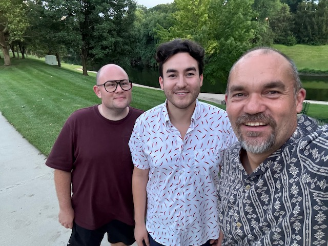
My oldest son Spencer was living in Kansas City with his partner Sam in a beautiful stone house from the 1800s. After we returned from Mexico, Spencer called me to say he and Sam were trying to sell their house to move to Albania and they needed my help to get it ready. I love helping my kids, Spencer never asks for help, and it seemed like a precious opportunity to spend time with Spencer and Sam before they move overseas.
So later that week I packed up my car and drove the 9 hours through Nebraska to Spencer and Sam's house. They have done a fabulous job renovating it over the years -- it was originally built without electricity and had lath and plaster walls. I helped clear out the back yard, did home depot runs, painted window frames, painted Killz paint on the stone basement walls, and finished up some countertops. After a few days it was finally ready to go up for sale!
Once our work was done, Spencer and Sam took me all over Kansas City. We ate amazing barbeque, walked around their beautiful neighborhood and its parks, and drove through other neighborhoods with eye watering mansions. Kansas City is beautiful but strange with its muggy weather and stark economic divides along formerly-redlined streets. Spencer and Sam told me about the constant violent street takeovers and how they'd hear gunshots most nights. A month or two earlier, Sam was inside a Cheescake Factory in a nice area picking up a to go order when there was a shooting in the parking lot. Sam saw people being crushed against the front windows as people tried to shove their way inside to safety and decided they had to get out.
So, they prepped their house, sold everything, and moved to Albania. Now they're in a condo on the beach and can see Greece from their patio. Their cost of living is much lower than it was in KC. Even though gay marriage isn't legal in Albania, Spencer tells me that he encounters much less homophobia in Albania than in Kansas City. Sam works remotely so it was easy for them to pick up and move. When we FaceTime, they look happier than I've ever seen them. I'm so proud of those guys for manifesting their unconventional dreams.
Underground Music Showcase 7/27/2024
Denver, CO
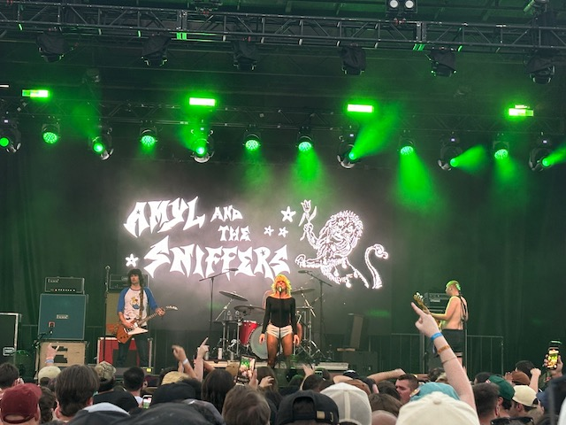
I'm totally obsessed with Amyl and the Sniffers. I feel like Amy Taylor's psycho stage persona is my own personal anger translator. This is probably because I'm so composed, friendly, helpful, and placid in real life. I love that even though their music is sometimes angry, it's also an expression of pure joy and positivity. As I was scheming and later reflecting about this year off, Amyl and the Sniffers' lyrics resonated with me even more strongly: "I've got plenty of energy. It's my currency"..."I drank from the right glass; I'm taking the right path"..."I don't care about the things I have - I got you"..."I like working under pressure - I'm a freak, it brings me pleasure"..."Life is short. Life is fun."..."I'm alive just for one time, right?". Except for my wife and kids, most people don't seem to understand or share my appreciation of Amyl and the Sniffers, but that's OK.
Samuel's band Clementine got into Denver's Underground Music Showcase (UMS) for the first time this year! UMS is a 3 day festival with maybe a dozen indoor and outdoor stages along Broadway and all kinds of amazing underground music, so of course my whole family got tickets to see him play. A few weeks later, Amyl and the Sniffers was announced as a surprise headliner!! I was beyond stoked!!
My wife and I met up for drinks with an especially awesome former Comcast collegue, we saw Samuel play a high-energy Clementine set in a packed, sweaty, humid, indoor punk rock venue, and then saw Amyl and the Sniffers on the main outdoor stage as the sun set. The weather was perfect. Amyl and the Sniffers' energy was even more intense in person.
I was so proud of Samuel for making it to UMS, and I was proud of Alex and the boys' girlfriends for supporting Samuel. I felt pumped full of energy from Samuel's show and Amyl and the Sniffers. Most of all I felt overwhelmingly lucky that I got to share this beautiful evening with my family.
Head out to Pacific NW in Westy 8/6/2024
Granite Creek, WY
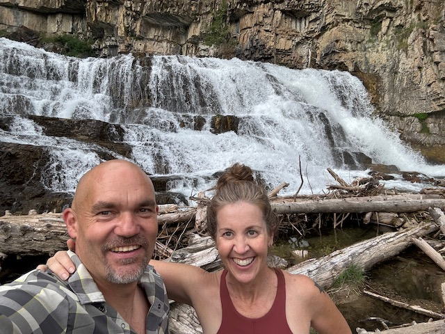
Take in Faux German Town 8/07/2024
Leavenworth, WA
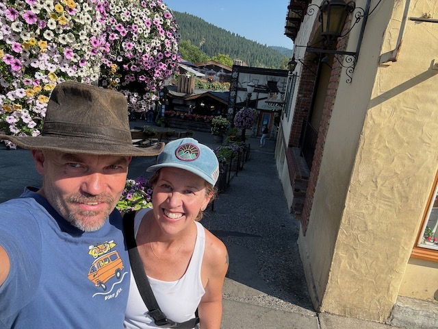
Camp on deck of Ferry to Juneau 08/10/2024
Off the west coast of Canada
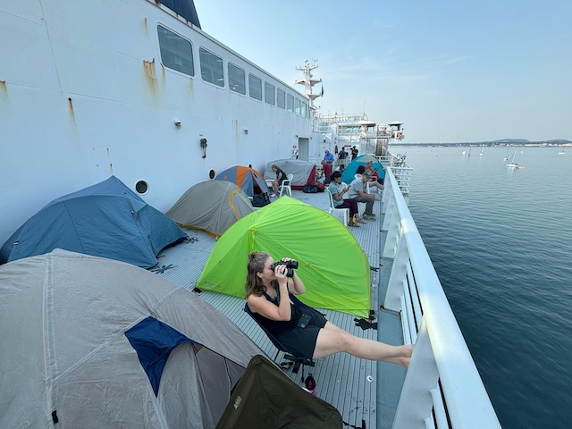
Hike to Mendenall Glacier 8/14/2024
Juneau, AK
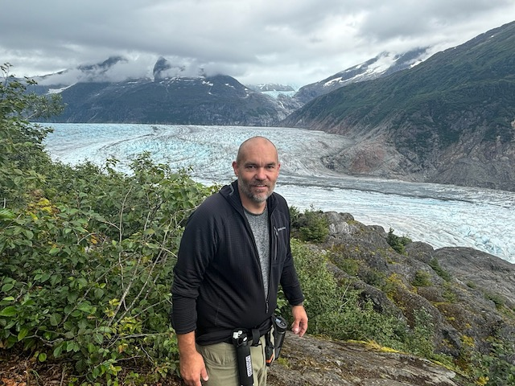
Whale Watching 8/17/2024
Juneau Alaska
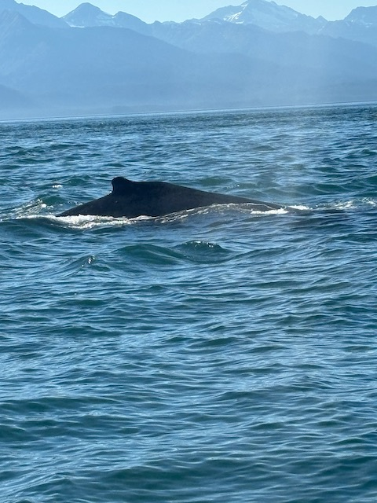
Float Plane to Watch Grizzlies 8/19/2024
Chichagof Island, AK
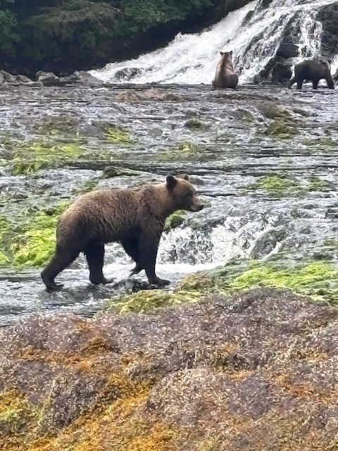
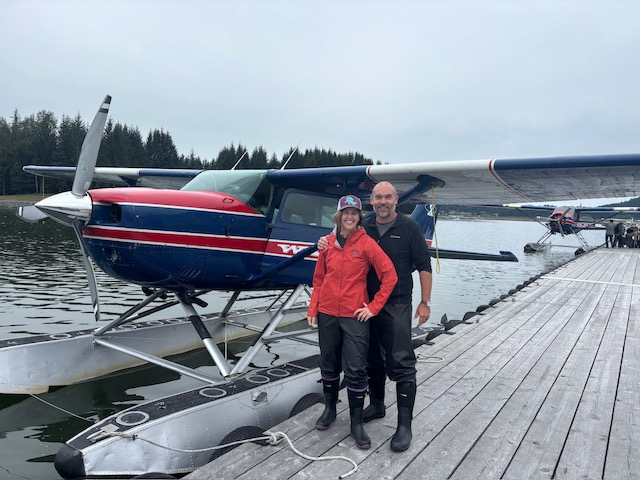
Westy Trip from Bellingham, WA and down Oregon Coast 8/22/2024
Lookout Beach Campground, OR
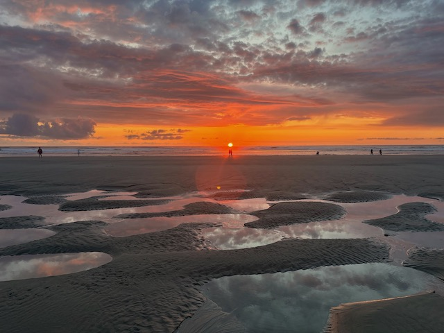
Hike Through Redwoods 8/24/2024
Redwoods State Park, Crescent City, CA
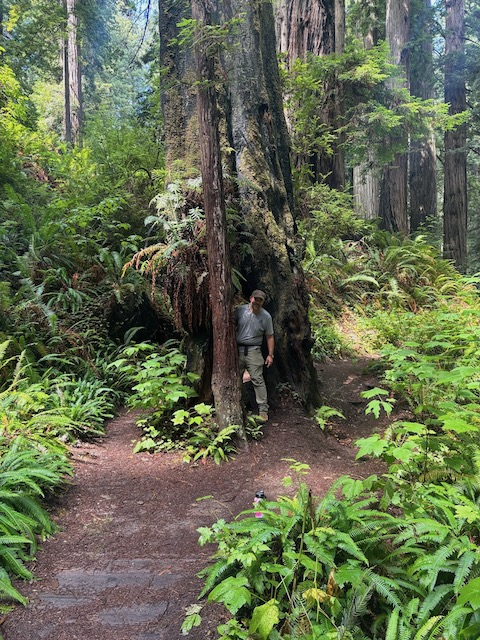
Three Day Backpacking Trip! 9/4/2024
Cherokee Peaks, CO
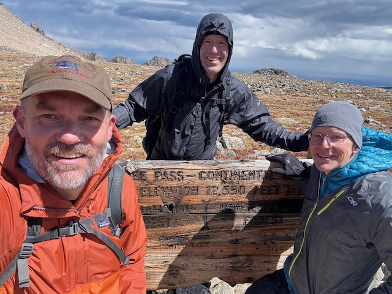
Greenday Concert 9/7/2024
Coors Field, Denver, CO
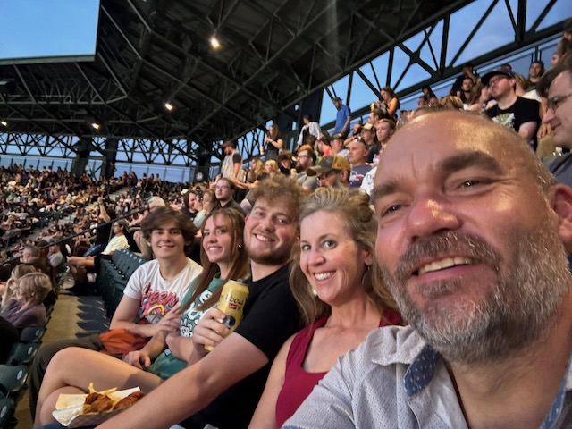
Motorcycle Trip on Million Dollar Highway 9/20/2024
Ouray, CO
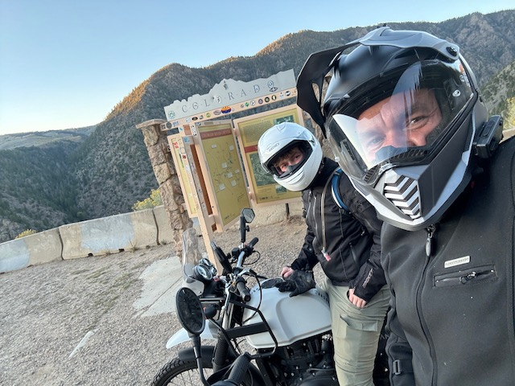
Liza Breaks Leg at Goth Babe concert 10/10/2024
Red Rocks Ampitheatre, Morrison, CO
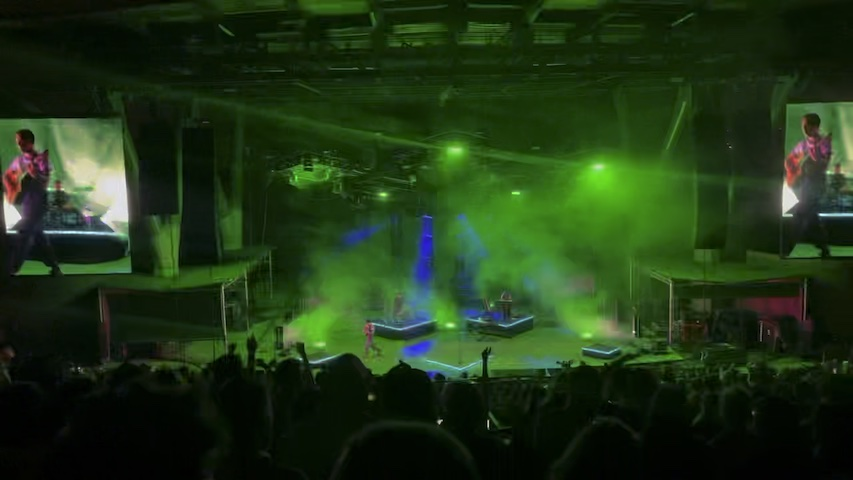
Will's Wedding 10/12/2024
Albuquerque, NM
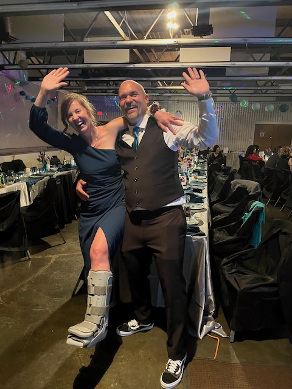
Ecuador Trip Postponed; Liza's Leg Healing 10/30/2024
Home (Fort Collins, CO)
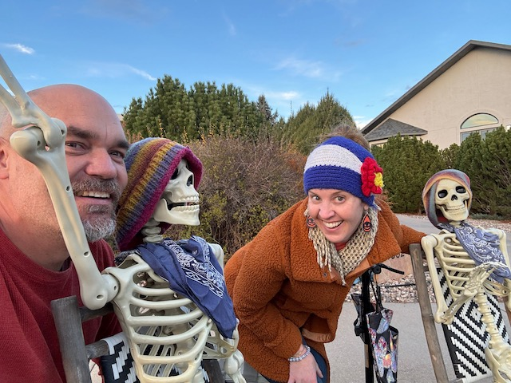
Quick Road Trip to Northern NM 11/21/2024
Ojo Caliente, NM
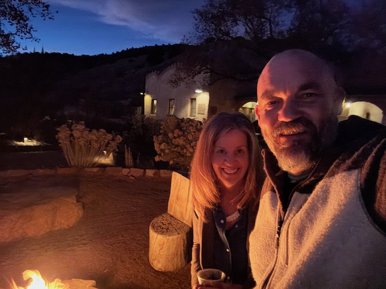
Flight to Ecuador! 12/28/2024
Quito, Ecuador
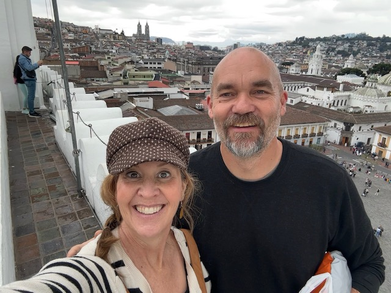
Epic New Year's Eve Pirotécnicas! 12/31/2024
Cuenca, Ecuador
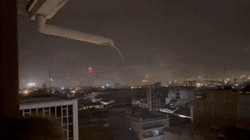
Got Lost In Andes 12/31/2024
Cajas National Park, Ecuador
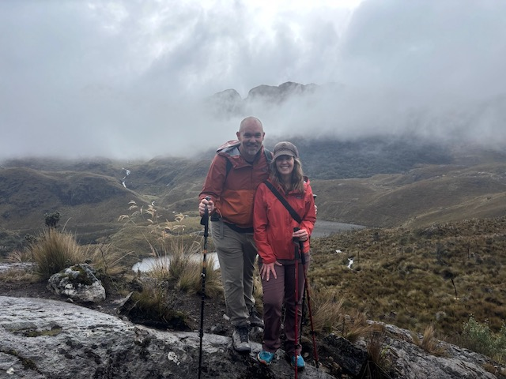
Motorcycle Trip Through Cloud Forest 1/12/2025
Mindo, Ecuador
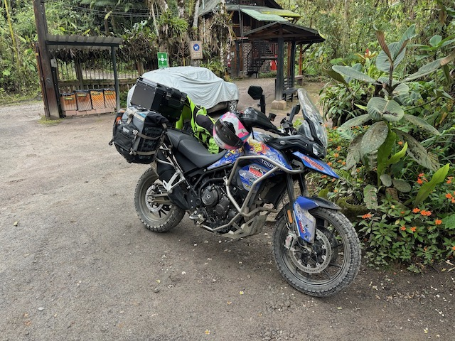
Motorcycle Incan Cobblestone Roads to Otavalo 1/14/2025
Otavalo, Ecuador
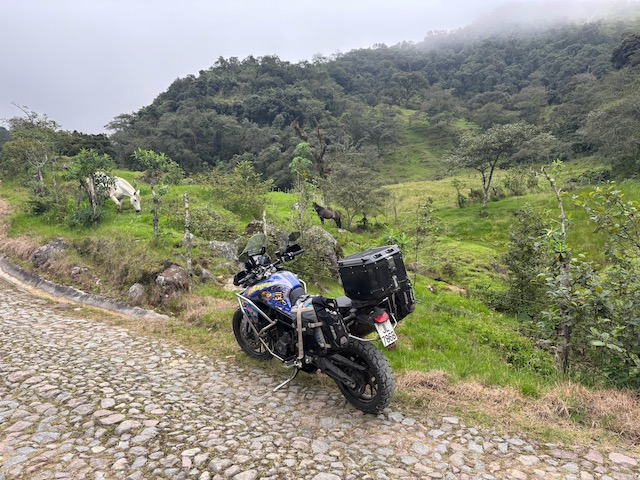
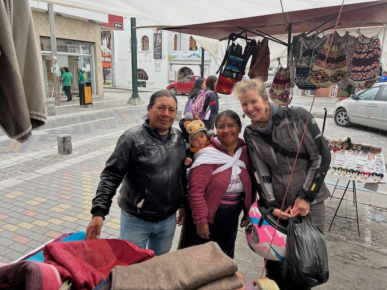
Last day in Ecuador 1/18/2024
Quito, Ecuador
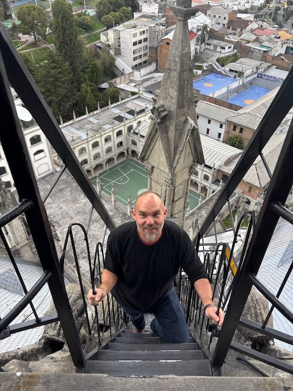